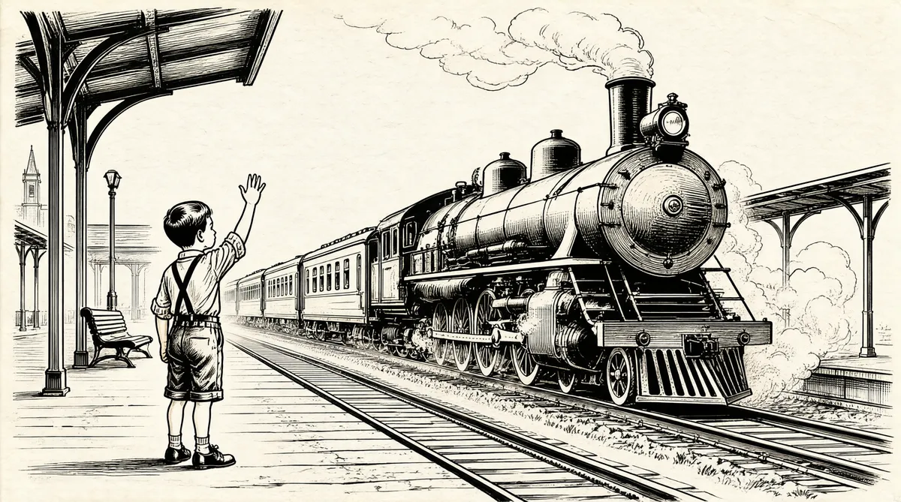

第9章 沾油墨的指头

沃伦已经11岁了。
1941年12月，一个星期日下午，巴菲特一家做完礼拜之后去了西点镇。在回来的路上，他们听到车上收音机里的播音员插播新闻说，日本袭击了珍珠港。事情的具体经过以及准确的伤亡人数当时尚不可知，但仅从这一事件来看，沃伦立即意识到世界将要大变。
沃伦父亲本已反战的政治观点一下子变得更为极端。霍华德和他的朋友们都认为罗斯福是一个好战分子，试图通过引诱美国人民加入又一次欧洲战争来实现独裁。他们认为，欧洲无力解决自己内部的琐碎争吵，其发展会导致严重的争端，因此必须让其在自己的火药筒里自行闷燃。
直到此时，罗斯福的引诱政策仍然无效。“国际合作”——别有居心的欺骗性借贷——租赁计划是为英国赤裸裸的战争提供礼物，既没有贷款，也没有租赁，这一计划被霍华德称为“老鼠洞计划”1——以及和那个身材魁梧的英国人温斯顿·丘吉尔一起发表演讲，都未能阻止美国卷入战争。罗斯福曾告诉全美国人民——霍华德和他的朋友都认为他在说谎——“全国的父亲和母亲们，我向你们保证……你们的儿子不会被送往任何国外的战场。”2沃伦说，如今，霍华德逐渐相信，在这场不顾一切、孤注一掷的战争冒险中，罗斯福和他的军事首脑乔治·马歇尔已经决定“让我们加入欧洲战争的唯一方式就是让日本人攻击我们，不要把日本人的袭击消息告诉珍珠港的人”。这一想法在当时的保守人士中甚是普遍，霍华德对此尤其深信不疑，正如他对大部分事情的态度一样。
随后的春天，内布拉斯加共和党委派霍华德去干一件吃力的工作：找一位候选人竞选国会议员，对手是民主党颇受欢迎的时任议员查尔斯·麦克劳克林。根据家里人的说法，霍华德找不到愿意和这位非常受欢迎的民主党人竞争而牺牲自己的“羔羊”，因此，在最后一分钟，他在候选人名单上填了自己的名字。
霍华德发现自己被强行推到了竞选者的位置。巴菲特一家在电线杆上贴上简单的传单，上面写着“巴菲特竞选国会议员”。他们去乡村集市等地方分发传单。
他是最没戏的候选人，他憎恨发表公共演说。我母亲是一个很不错的竞选者，但我父亲是个很内向的人。
利拉是个很健谈的人，天生就知道如何调动一群人，也喜欢与人接近、与人打交道。巴菲特家的孩子们则四处宣传：“请投票给我爸爸好吗？”之后，他们就去玩儿大观览车。
接着我们做了一个简单的、15分钟的电台节目。我的母亲弹管风琴，我父亲则介绍我们：“多丽丝，14岁；沃伦，11岁。”我的台词是：“等一下，爸爸，我正在看体育版。”然后，我们三个合唱《美丽的亚美利加》，我母亲用她的小管风琴伴奏。
这并不是煽动人心的政治演讲，不过因为这个15分钟的电台节目，大家都开始争当竞选活动志愿者。
即使赢得了志愿者的帮助，霍华德还得克服自己对政治制度缺陷的悲观和死心眼儿的诚实。霍华德·巴菲特的政治纲领充满了可怕的警告，以及在那个时代中西部地区随处可见的对某些政要盲目服从的怒火中烧。霍华德要求投票人“给所有的怪人、妄自尊大者、眼线、密探、梦游症患者和社会势利眼买一张离开华盛顿的单程票”。
这种让人喷火的言辞掩盖了霍华德的亲切、睿智和某种天真的气质。多年以来，霍华德都会在口袋里放一张手写的纸片，一张柔软的旧亚麻纤维纸，纸片上写着：“我是上帝的孩子，我在他的手中。我的身体从来就不是永生的，但我的灵魂是不朽的。那么，我还担心和惧怕什么呢？”3
不幸的是，去奥马哈的大街上竞选时，在他唯一的儿子看来，霍华德几乎是在一字一顿、笨拙地宣讲他的想法。
竞选时，霍华德在破晓前很早就把已经12岁的沃伦唤起床，带他去南奥马哈的牲畜围栏场。铁路沿线分布的是奥马哈的主要产业，雇用着近2000人，其中大部分是移民。每年有超过800万头牲口4被火车运到肉制品生产大城市，并被生产成数十亿磅的包装商品。5南奥马哈曾经是一个城市，和市区的地理距离很短，但是文化上的距离却像是隔着一个大洲。数十年以来，那里都是种族问题孳生的温床。
沃伦在街区的一边蹑手蹑脚地走着，手握得紧紧的，紧张不安地看着父亲。霍华德因为小时候的一场小儿麻痹症而走路有点儿跛，家里人同时还很担心他的心脏状况。霍华德沿着街道下行，走近那些大块头、脸如刀削、身穿工作服的男人，他们正走向屠宰工厂，去上5点半的早班。看着父亲做的这一切，沃伦的胃都揪成一团了。
这些工人中的很多人在家都不说英文。最贫穷的人、黑人和新来的移民拥挤地住在寄宿房屋里和院子旁边的棚屋里。那些较有头脑和财力的人则设法进入附近的教区，住在屋顶斜度很大、分布在南奥马哈山上山下的干净小房子里：捷克人住在小波希米亚，塞尔维亚人和克罗地亚人住在古斯谷，波兰人住在G镇（之前的希腊镇）；希腊人很久前就离开了，他们的房子在1909年的反移民暴乱中全被毁了。
霍华德要接触各个工种的工人。在屠宰场最高楼层负责屠宰的专业屠宰工级别最高，而级别较低的工人则在下面的低楼层工作，清理骨头、熬制猪油和给牲畜配种。有一些妇女在切砍猪肉，灌制香肠，贴标签，给鸡拔毛，挑选鸡蛋。管理人员特别喜欢黑人女性，因为可以靠她们完成清理牲畜的头、尾、内脏的工作，而且工资比白人低。6她们清洗肠、膀胱、心、腺体和其他内脏器官，她们的手浸泡在水和内脏杂物里面，脚站在热得可怕、没过脚踝的血水里，分拣、盐腌并包装香肠。她们张着嘴，浅浅地喘气，以防排泄物微粒通过空气吸入肺里。7即使是最近刚落脚和地位最卑微的外来移民，或是男性黑人也不会走进内脏处理室，这不折不扣地成了黑人女性的“专业”。
这些男人和女人、黑人和白人，他们身上的每根毫毛都站在民主党一边。内布拉斯加的其他人可能反对新政——总统针对大萧条的治疗方案——但是对镇上的这些人来说，罗斯福仍然是一位英雄。不过，霍华德·巴菲特很有礼貌地把传单强塞进他们满是老茧的手里，传单尖锐地指责罗斯福是美国有史以来对民主党最大的危害。如果有时间能和工人们说上两句，霍华德会平静地解释为什么他总是投票赞成颁布那些屠宰工人都反对的法律。
霍华德是个政治狂热分子，但他既不傻也不疯。即使他把希望交到了上帝手里，他也有后备计划。沃伦并不是来这里学习知识的，也不是来帮父亲打架的，他的任务是，如果屠宰场的工人要揍他的父亲，他得狂奔着去找警察。
在这种情况下，理性的人可能会很疑惑霍华德到底要干什么。他的努力可能无法赢得一张选票。但是，显然，他感到自己有责任去见本区的每个潜在选民，无论这些人是否在意他的出现。
沃伦总是想着如何能全身而退，但他也从未跑去向警察求助。这可能只是因为运气或者是因为霍华德的风度体现了基本的礼貌。不过，巴菲特一家没有理由相信，这将扭转霍华德的失败者角色，即使他们这么认为，也无济于事。在1942年11月3日的选举日，多丽丝认定父亲已经失败，她去市区给自己买了一枚胸针，准备第二天上学时戴，这样她还有个盼头。“父亲写好了败选声明，我们9点左右就都上床睡觉了，因为我们从来不熬夜。第二天一早醒来，父亲发现自己竞选获胜了。”
霍华德对外交上的冒险主义很是怀疑，这不仅表现为其本身如贵格教徒般的怪僻人格，还表现为他严重的保守孤立主义立场。这种保守孤立主义曾经对中西部地区有过深刻和广泛的影响，这种思潮虽然最终衰落，但是“珍珠港事件”又令它复活了一阵。尽管罗斯福具有压倒性的受欢迎程度，不过工人阶层对他外交政策的支持在奥马哈暂时出现了动摇，正好够让霍华德战胜竞选对手，一位可能过分自信的对手。
第二年的1月份，巴菲特一家把邓迪的房子租了出去，坐上了去弗吉尼亚的火车。欧内斯特给了他们一篮包装精美的食物，同时告诉他们不要错上了其他的车厢，唯恐他们从同车的大兵身上传染上致命的疾病。
他们来到华盛顿的联合火车站，发现这个城市拥挤而且嘈杂。城里到处是拥挤的人群，其中大部分人都在新成立的大型战时政府机构里工作。军队征用了在可及范围内的一切建筑、办公室、椅子和铅笔，为搬进新落成的五角大楼作准备。五角大楼是世界上最大的政府办公大楼，在竣工的时候因为过大而显得有些与周围格格不入。那时候，不太结实的临时办公建筑排满了这个国家广场的每一寸土地。8
成群结队的新来者令当地人数增加了一倍。衣衫褴褛、头发蓬乱的黑人，穿过第14街大桥不断涌入。他们来自弗吉尼亚，逃离了南方贫困的烟草农场、棉花地和纺织厂，带着被诱惑的期待，希望在这个世界最繁忙的城市中找到工作。这群人中有的令人尊敬，有的一贫如洗，有的不谙世故。而随着这一龙蛇混杂的人群到来的，还有扒手、妓女、骗子和流浪者，他们把华盛顿变成了美国的罪犯首都。
19世纪笨拙的有轨电车摇摇晃晃地在水泄不通的街道上蠕蠕前行，车上挤满了政府工作人员。在电车的任何一处站台，都可能有当地的居民在抗议示威，反对华盛顿运输公司雇用黑人。9不过，种族隔离的僵局开始慢慢地被打破。在黑人居住区的一家名叫“小宫廷”的自助餐厅里，霍华德大学的学生正在举行一系列的“午餐静坐”活动，抗议该餐厅不对他们提供服务的行为。他们占满了所有能占的餐桌，拒绝离开，最后成功地让这家餐厅关了门。10
巴菲特家的朋友雷歇尔11——霍华德在股票经纪行结识的熟人——告诉他们，别住在华盛顿，形势很糟。他们得知，在弗吉尼亚，海军部的一个人刚好腾出一栋大房子。房子坐落在山上，山下是拉帕汉诺克河，房子旁边是查塔姆大宅，是当年弗雷德里克斯堡战役时北方联邦军队的总指挥部。山上的这栋房子有10个壁炉、规划齐整的花园，以及一间花房。虽然相对巴菲特家的风格来说这栋房子过于庄严，而且到华盛顿要一个小时路程，但他们还是暂时租下了它。霍华德在哥伦比亚特区租了一个小公寓，每逢周末才回大房子。内布拉斯加的国会代表团分派他到金融委员会工作，他很快就事务缠身，无暇他顾。他要开始适应，并学会当一名众议院议员的规则、流程和不成文的惯例。
利拉不久就开始坐车到华盛顿去找一处可长期安身的住所。自从他们家到了这里，她就经常急躁易怒，还时不时地说起奥马哈，非常怀念。离开奥马哈来到华盛顿的时机事后证明是不利的。利拉的妹妹伯妮丝开始有意无意地暗示她要自杀，而且还说如果家里人不把她送到诺福克州立医院——她妈妈斯特拉也住过这家医院——一切后果自负。伊迪丝现在负责照顾妹妹，她咨询了医生的意见。医生认为，伯妮丝想要和母亲住在一起，可能正在通过夸张的方式达成其目的。然而，他们显然又必须把自杀的威胁当一回事，因此，家里人把伯妮丝送进了诺福克州立医院。
斯塔尔家里麻烦事的细节很少当着孩子们的面讨论。每个孩子都在以自己的方式适应着华盛顿的生活。15岁的漂亮的多丽丝感觉自己像《绿野仙踪》里的多萝西，刚刚离开黑白两色的堪萨斯，来到了多彩的魔法国度。她的生活完全变了。她成了弗雷德里克斯堡一带的美女，爱上了这个城镇。12利拉开始认为她的女儿想要跻身于上流社会，而这种企图与其身份并不相称。同时，她仍然会发表长篇大论，批评多丽丝。不过，到了这个时候，多丽丝在精神上已经抵触母亲的管制，并开始为自己的想法和个性而抗争。
12岁的沃伦在八年级度过了6周时间，在学业上，这个地方远远落后于他在奥马哈的课程。自然而然，他第一个本能的反应是去找一份工作。他在一个面包店工作，在那儿，他“几乎什么都不做，不用烘烤，也不用售卖”。在家的时候，举家搬迁这事让他烦躁和难过，因此，他想回奥马哈，他说一种奇怪的“过敏症”严重影响了他的睡眠，他称自己得站着睡觉。“我给祖父写了一些让人感伤和难过的信。他的回信大意是说，你们得把沃伦送回来，你们知道吗？你们正在毁掉我的孙子。”折中的结果是，沃伦坐上火车，回内布拉斯加去待了几个月。让沃伦高兴的是，他在火车上的邻座是内布拉斯加的参议员休·巴特勒。沃伦总能以他早熟的性格和年纪大的人融洽相处，他轻松地和巴特勒闲聊起来。在返回奥马哈的一路上，他的“过敏症”被抛诸脑后。
9岁的伯蒂很依赖祖父欧内斯特，她认为自己和祖父有一种特殊的关系。她很嫉妒沃伦，并带着对自己与祖父关系的自信，给欧内斯特写信：“不要告诉爸爸妈妈，但也请人来接我吧。”
对于伯蒂写的这些类似的信件，沃伦说：“别太在意，她装装样子罢了。”13
欧内斯特的回信说：“女孩子应该和母亲在一块儿。”伯蒂只得待在弗雷德里克斯堡，对哥哥总能“为所欲为”感到火冒三丈。14
沃伦回到罗斯希尔学校，又和朋友们聚到了一块儿。每天，他会在正午去父亲以前合伙人卡尔·福克的家里，享用卡尔的太太格拉迪丝为他准备的午饭——三明治和西红柿汤——以及对他和蔼可亲的招待。正如沃伦对朋友杰克·弗斯特的母亲和自己姨妈的态度一样，他很敬慕福克太太，15仿佛她是自己的母亲。
虽然沃伦和这些中年女性相处不错，但他很害羞，害羞到极点，同龄的女孩让他感到紧张。即便如此，他很快就喜欢上了多萝西·休谟，八年级新班级里的一位女同学。他的朋友斯图·埃里克森喜欢玛吉·李·卡纳迪，另一个朋友拜伦·斯沃森则喜欢上了琼·福格特。经过几周的商量之后，他们鼓起勇气邀请姑娘们看电影。16但是，当沃伦走到多萝西家门口邀请她的时候，她父亲的应门声让他临阵退缩了。沃伦改变初衷，想争取多萝西的父亲成为一本杂志的订户。不过，最后，沃伦还是想方设法向多萝西发出了邀请，她同意了。
在约好的星期六，拜伦和沃伦共同赴约，因为他们都怕单独露面。这个下午就此拉开序幕：一行四人开始漫长的“跋涉”，经过一栋又一栋房子，在不太自在的沉默中，步行过数个街区，来到公车站。住在反方向的玛吉·李已经和斯图来到站台。大家一起上了车。在去市区的路上，男孩们红着脸盯着自己的鞋，女孩们则彼此轻松地交谈。到了电影院后，玛吉·李、多萝西和琼直接走到一排座位，三人挨坐到了一块儿。男孩们想在看两部恐怖片——《木乃伊之墓》和《猫人》——时和女孩亲近的计划落空了。他们也只得坐在一起。在观看两部电影的整个过程中，女孩们或咯咯笑，或发出尖叫，男孩们只能看着女孩们浅黑色的脑袋挤作一团。看完电影，他们去沃尔格林超市吃东西，又是一段痛苦的过程。之后，大家坐上公车，男孩们手足无措，开始约会的返程。约会的最后是走一段长长的路，把女孩子送回家。整整一个下午，男孩们几乎一句话都没说。17三个人都感到很丢脸，以至于他们过了好几年才重新鼓起勇气，去约会其他的女孩。18
不过，沃伦是“没了贼胆，尚存贼心”。他之后又喜欢上了班里的另一个女孩克洛–安·考尔，一个迷人的金发姑娘。但是，这女孩对他没兴趣。沃伦似乎根本无法使自己和女孩子的关系取得任何进展。沃伦又一次选择用赚钱来转移自己的失望。
祖父喜欢我总是想着怎么去赚钱。我过去常常在社区四处收集废报纸、杂志去卖。艾丽斯姑妈会带我去废品收购站，在那里，100磅废纸差不多能卖到35美分。
在祖父家里，沃伦看了满满一书架的过期杂志《新杂货商》，诸如“如何管理肉铺库存”这样的标题吸引住了他。到了周末，欧内斯特会让他在自己主宰的“帝国”巴菲特父子杂货店里干活儿。杂货店有两层车库那么大，在舒适的邓迪中上层社区，杂货店那具有西班牙风格的瓷砖屋顶非常显眼。巴菲特杂货店一直是赊账买卖，并负责送货。太太小姐们或是家里的厨子会拨打胡桃大街号码为0761的电话，把他们的采购清单念给店员听，店员会把他们的订单记下来。19店员在店里四处飞奔，在货架之间来回搬动木梯，爬上爬下地拿箱子、包和瓶瓶罐罐，在成堆的蔬菜水果中翻寻，把篮子装满。为了砍下一串香蕉，他们得用一把非常锋利的刀。店员还要跑到地下室去取顾客需要的泡菜和腌制品，这些东西都被冷藏在桶里，旁边放着成箱的鸡蛋和其他不易储藏的食品。所有这些货物都被装进篮子——夹层的店员用滑轮把篮子给升上去——称重计价并包装好，送到楼下。接着，巴菲特父子杂货店的橙色送货卡车会把这些东西送给奥马哈那些正在等待的家庭主妇们。
欧内斯特坐在夹层的桌子边上，俯看着店员的一举一动。店员们背后都管他叫“老头欧尼”。“他什么也不做，只是发号施令。”沃伦说，“我的意思是，他是一位国王。他对一切了如指掌。如果有客人进店，而没有受到应有的接待……他会捻动手指，店员就会遭殃。”欧内斯特只认“工作，工作，大量的工作”。他要保证自己所辖范围内的每个人都明确世上没有免费的午餐。他对此有很强的责任感，以至于有一次他给一个在店里打包、放置货物的男孩子2美分，让他去缴纳自己的社保金。给钱的过程还伴随了一场关于社会主义罪恶的半小时演说，欧内斯特说，这个男孩子应该充分认识到，邪恶的罗斯福及其政府所聘用的那帮教授们——穿花呢衣服、吸烟斗，来自常春藤联盟大学——正在毁灭这个国家。20
欧内斯特离开夹层的唯一时刻就是当他看到一位体面的女士由司机开车送到店里的时候。他会疾步走下楼梯，抓过一张订货单，亲自接待她。欧内斯特会向这位女士介绍刚刚从夏威夷空运过来的新鲜鳄梨，还会分发薄荷棒棒糖给她的孩子们。21店员习惯了这种区别对待，当看到霍华德的弟弟弗雷德不理会利拉，转去接待另一位顾客的时候，利拉愤怒地大步离开，再也不到店里购物。从此以后，买东西的事都是霍华德来做。22
沃伦如今感觉自己就像是店员中的一员，在老头欧内斯特的指挥下，在店里忙不迭地干活儿。在祖父店里工作，他觉得自己很像一名奴隶。因此他下定决心，自己的一生绝不会如此。
祖父让我做很多琐碎的杂事，有时我在底层干活，有时他让我和他一起坐在夹层的桌边，计算战时的定量配额票——糖票、咖啡票。还有的时候，我躲在他看不到我的地方。
最糟糕的工作是他花钱请我和我的朋友约翰·巴斯卡铲雪。我们遇到了很大的暴风雪，地面积了足有1英尺厚、冻得非常硬的雪。我们必须铲掉几个地方的整整一层雪——顾客停车的路面、商店后巷、卸货点以及放着6辆卡车的车库周围。
我们干了大约5个小时——铲啊，铲啊，铲啊，铲啊。最后，我们甚至连指头都伸不直了。干完活儿，我们去找我祖父，他说：“嗯，我该付你们多少钱，小伙子们？1角太少了，1元又太多了！”
我永远忘不了那一刻——我和约翰面面相觑。
这样算出来的结果是——最高的工钱——铲雪：20美分/小时。
噢，不！这还是我们俩要平分的价钱，这就是我的祖父。
瞧，巴菲特家的人就是巴菲特家的人。不过，沃伦学会了一个值钱的教训：事先得搞清楚交易内容。23
欧内斯特具有巴菲特家族的另外两大特质：对女性的冲动性情以及对尽善尽美的迷恋。在亨丽埃塔过世后，他曾有过两段短暂的婚姻，其中一次是从加利福尼亚州度假回来，和他刚刚认识的一位女士结婚。而在工作的时候，他的完美主义体现得淋漓尽致。巴菲特父子杂货店是奥马哈最古老杂货店的传承，而欧内斯特的苛刻风格全都表现为追求完美的顾客服务理念。他非常确定，正在侵入社区的全国折扣连锁店只能是昙花一现，因为它们从未能提供可以与杂货店匹敌的服务水平。在这段时间的某个时候，欧内斯特自信满满地给他的一位亲戚写信：“连锁店的日子完了。”24
假如巴菲特父子杂货店的面包卖完了，欧内斯特宁愿让沃伦一路小跑到附近的HinkyDinky超市去买零售面包，也不愿让他的顾客失望而归。沃伦并不喜欢这个差事，因为他一进入超市就会被认出来。当他悄悄穿过超市的时候，超市的店员会拖长声音大声叫他，“你好——巴菲特先生！！”声音大得所有人都能听见。沃伦怀里都是面包，“尽量不太招眼”。欧内斯特很憎恨HinkyDinky，这家超市和欧内斯特在邓迪的主要竞争对手萨默斯都是由犹太人经营的。向竞争对手付这么多钱已经让他感到心痛，更何况是给犹太人。和20世纪中期以前美国的大部分地区一样，奥马哈实际上存在着宗教和种族歧视。犹太教徒和基督徒基本过着隔离的生活，有各自不同的社交俱乐部、市民社团，很多行业拒绝接受犹太人，或者不雇用他们。在公开场合，欧内斯特和霍华德用“爱斯基摩人”这个词对犹太人进行攻击性评论。因为在当时的社会，反犹似乎是理所当然的，因此，沃伦对他们的反犹立场也未多想。
实际上，对沃伦而言，欧内斯特是一位权威，只有在上学，以及每周六祖父让他在送货卡车上工作几小时的时候，他才能逃离权威的监督。从卡车上往下卸货让人筋疲力尽，沃伦开始明白自己有多讨厌体力劳动。
有个司机叫埃迪，我以为他有100岁了。当巴菲特父子杂货店开始送货业务的时候，他就开着一辆小型卡车，不过他可能只有65岁。
他有一套最疯狂的运输路线——先去本森，然后开上5英里，回到邓迪，放下某位顾客购买的食品杂货，然后又回到本森。所有这一切都发生在战时实行汽油配额期间。我问他这么做的原因，他露出一副恶心的表情说：“如果时间足够早，我们也许可以碰上她脱衣服。”
沃伦一开始搞不懂这个暗语指的是什么。“早上，他亲自把食品杂货送到房子里，而我则去搬那24个被退回商店的苏打水空瓶子。埃迪借送货之际，去那里色迷迷地偷看最漂亮的顾客考尔太太，想看她脱衣服。”考尔太太是克洛–安·考尔的母亲。当沃伦在那里搬空苏打水瓶子的时候，克洛–安没注意到他。“在百货店曾经工作过的人中，我可能是薪水最低的。除了知道自己不喜欢苦力活儿外，我什么都没学到。”
沃伦把他争取独立的家庭战斗带到了欧内斯特的周日晚餐桌上。打出生以来，他鄙视一切绿色的东西，除了钱。在意识观念之战中，花椰菜、抱子甘蓝、芦笋像步兵一样排列在他的餐盘里。沃伦在父母那里一般都能随心所欲，但是，欧内斯特可不会容忍沃伦的任性。艾丽斯试着哄劝她的侄子，欧内斯特却在餐桌的另一边怒瞪着沃伦，等啊，等啊，等沃伦把他盘子里的蔬菜吃完。“你坐在桌边用两个小时吃完芦笋，但最后总是他（祖父）胜出。”
不过，在其他大部分日子里，待在欧内斯特店里给了沃伦最大限度的自由。在仓库里，沃伦发现了多丽丝的Schwinn牌自行车，上面还有她的名字——这是欧内斯特送给多丽丝的礼物，当他们去华盛顿的时候，这辆自行车被留在了奥马哈。沃伦说，“你知道，那个时候，一辆自行车可是一件相当贵的礼物。”他开始骑多丽丝的自行车。一段时间之后，沃伦把自行车卖了，用来支付男孩骑的自行车的首付款。25没有人对此说什么，沃伦拥有这种“光环”。
欧内斯特以他的方式宠溺着沃伦。夜里，沃伦和欧内斯特带着“虔诚和崇敬之心”，一起收听欧内斯特最喜欢的电台主持人小福尔顿·刘易斯的节目，这位主持人经常详细阐述一个主题，即美国不应该卷入国外的战争。欧内斯特对此非常认同。
在小福尔顿·刘易斯为他的保守能量充电之后，欧内斯特会整理自己对正在撰写的畅销书的最新想法。他决定把书名叫作“如何经营杂货店和我从钓鱼中学到的知识”，因为他认为这两件事是“人类确实需要关心的两大主题”。26
夜里、下午晚些时候或者傍晚，我会坐在那里，我的祖父口述，由我书写。我把内容都记在旧账本的背面，因为我们从来不浪费店里的任何东西。祖父认为这是一本全国人民都在期盼的书。我的意思是，他认为写其他的书完全没有意义，比如《飘》或任何类别的书。对所有人而言，在读《如何经营杂货店和我从钓鱼中学到的知识》这本书的时候，他们为何会想去看《飘》呢？27
沃伦喜欢这本书的全部，或者说是几乎全部。他非常高兴能够回到奥马哈，和他的祖父、姨妈、姑姑、朋友们重聚，以至于有一段时间，他几乎完全把华盛顿抛到了脑后。
几个月后，沃伦家的其他成员开了3天车到内布拉斯加过夏天，住进了租的一栋房子。他们的手头有点儿变紧了。之前，屠宰场只是霍华德一部分选民的安家之所。不过，每当风从南部吹来，那股浓烈的臭味也穿过城镇，这个时候，所有的奥马哈人都知道——这是钱的味道。霍华德如今已经买下了南奥马哈饲料公司，以改善他众议员低工资的现状。沃伦去这家公司为他父亲工作。
南奥马哈饲料公司是一个巨大的仓库，看上去有几百英尺那么长，没有空调。我的工作是把50磅重的动物饲料包从货运汽车上搬进仓库。货运汽车里堆满了饲料包，你无法想象货运汽车有多大。真的是一个大家伙！有个叫弗兰基·齐克的家伙轻松地把这些东西搬来搬去，像个举重运动员。我穿着一件短袖衬衣，因为天气非常热。我吃力地用手抓住这些饲料包，拖着它们走。到中午的时候，我的胳膊都现出了血痕。这个活儿大概会持续3个小时，然后，我才步行到车站，坐车回家。体力活儿是笨蛋干的工作。
夏天结束之前，巴菲特一家去奥科博吉湖度了一次短假。当他们离开的时候，多丽丝发现沃伦卖掉了她的自行车。但是，因为家里处事不公，沃伦再一次不用承担任何后果。实际情况是，当夏天结束的时候，沃伦的父母强迫闷闷不乐、一脸严肃的沃伦坐火车回华盛顿，而他用“赃款”给自己买的那辆新车也一起带回去了。多丽丝对此怒不可遏。不过，偷卖多丽丝的自行车只是一个标志性开始，沃伦的所作所为迫使父母最终采取了强制命令。
回到华盛顿，巴菲特一家搬进了Fitchous，这是一栋很漂亮的殖民风格的两层白色建筑，位于华盛顿春谷郊区，院子里种有一棵合欢树，从马萨诸塞大街右转即到。春谷是一个建于1930年的限制性社区，供“社会名流和政界要人”居住。28建筑风格包括石制都铎式建筑，以及和巴菲特家房子一样的两层殖民风格的房屋。利拉在房子上花了17500美元，包括添置家具的费用。沃伦住的是前卧室。邻居家里有几个男孩，都比沃伦年纪大。街对面住着基威尼一家。13岁的沃伦喜欢上了基威尼夫人——在当时沃伦的眼中，她是最具母性的中年女性。他说：“我对她非常着迷。”
整个社区很有国际化的感觉，里面住满了外交家。战时海军的女性成员组织志愿紧急服役妇女队29的总部就在美国大学哥特式风格校园的附近。巴菲特一家开始调整自己，以适应华盛顿的战时生活，这里和奥马哈天差地别。大萧条结束，这个国家最终变得繁荣昌盛，但是因为战时的配额制，钱越来越没用。每天的生活都用记分点和配给票来衡量：每月48蓝点购买罐装食品，每月64红点购买易腐食品，配给票用来买肉、鞋、黄油、糖和袜子。没有配给票，再多的钱也买不到肉，只有鸡肉无须配给。黄油实行配给供应，而且供应不足，因此，每个人都学会把黄色的食物色素塞到无味的白色代黄油食品中。所有人都买不到新车，因为制造汽车及零配件的所有工厂都改为生产国防用品了。要想开车出去旅行一趟，你得集中全家的汽油供给票。爆胎会是一件大麻烦，因为汽车轮胎是当时配给最紧张的商品之一。
每天早上，霍华德坐公车沿着威斯康星大道走到头，到达乔治敦的M大街，然后转弯沿着宾夕法尼亚大道走，他在行政办公大楼附近下车，再步行到办公室。政府和外交机构膨胀，大街上到处是身着各色服装的人们，包括大批的文职人员以及穿制服的军人。
黑人女性一身做礼拜时的穿戴，一次又一次在美国国会大厦前举行示威活动，抗议南方地区滥用私刑。负责空袭警报事务的民防队员在社区街道巡视，检查所有房子是否都装有不透明的遮光窗帘。每个月有一两次，巴菲特家会被要求到地下室，关闭所有的灯，进行强制性的停电演习。
利拉从来到华盛顿的那天开始就不喜欢这里。她很想念奥马哈，也感到很孤独。霍华德完全埋头于他的新工作，和妻儿的距离越来越远。整个白天，他都在办公室工作；到了晚上，又看美国国会会议记录和立法材料。他的星期六都耗在办公室；还经常在星期日下午做完礼拜后，又回到办公室。
多丽丝现在就读于伍德罗·威尔逊高中，在这里，她又一次成为受欢迎的热门人物。伯蒂也在街坊四邻里找到一群和自己合得来的女孩，很轻松地和她们交上了朋友。沃伦的经历和他的姐妹们完全不同。他在艾丽斯·迪尔初级中学上学，30这所学校位于华盛顿的最高点，可以俯视春谷、校后山谷里的黑人学校以及城市的其他地方。
沃伦所在班级的同学很多都是外交官的子女，是一个不同于以往的集体，比沃伦和如今失去联系的罗斯希尔的朋友都要优雅。一开始，沃伦很难交到朋友。他去参加篮球和橄榄球比赛，但是因为他戴着眼镜，在身体接触性体育活动中又缩手缩脚，结果都不成功。
我离开了我的朋友，又交不到新朋友。我对新班级毫不熟悉。我根本没有自信。我在运动方面并不差劲，但也不出色，因此就拿不到入场券。多丽丝和伯蒂都是漂亮女孩，引人注目，她们做得很棒。长相漂亮的女孩不存在麻烦，因为全世界都会来适应她。因此，她们适应得都比我好，而且好得多了。这也让我有点儿心烦。
他的成绩一开始是C和B，之后提高到A，除了英文。“我的大部分成绩和我对老师的态度有关。我讨厌我的英文老师奥尔文小姐。31音乐课成绩一直以来就是C。”音乐老师鲍姆小姐是学校里长得最好看的老师。绝大部分男孩都喜欢她，但沃伦和鲍姆小姐相处真的很难，因为她在成绩单上写道，沃伦在合作、礼貌和自立方面还需提高。
我是班里年纪最小的。我喜欢女孩，不会躲着她们，但是我没什么自信。女孩子们在社交方面都比我成熟。当我离开奥马哈的时候，我们班里还没有人跳舞。而当我搬到华盛顿的时候，班里的人都已经跳了一两年的舞。因此，实际上，我根本赶不上。
沃伦12岁时候的举家搬迁剥夺了他一段重要的经历：艾迪·福格的舞蹈课。在奥马哈，每逢周五晚上，在美国退伍军人协会的礼堂里，艾迪·福格——一位矮个儿、胖胖的中年女士——让男孩女孩们按高矮次序排好队，然后让他们结对儿。男孩打着领结，女孩穿着束腰衬架裙。他们会练习狐步舞，跳华尔兹。在公众场合与年轻女士相处时，男孩子要学习如何当一名“绅士”，并努力用文雅的寒暄打破沉默僵局。他要牵起女孩的手，学会揽着她的腰，感觉她那和自己贴近的脸蛋。当两人和谐地移动舞步的时候，男孩第一次感受到想领着舞伴跳舞的愿望，并体会到其中的乐趣。通过很多次无伤大雅而又共同分享的窘迫和成功，男孩女孩最终唤醒了彼此的亲密感。沃伦此时感到毫无把握，自己被甩到了后面，在一群成长中的小伙子中，他是一个孩子。
沃伦的同班同学注意到，他对人友好，但是似乎很害羞，尤其是在女孩旁边。32沃伦出生在8月，而且在罗斯希尔学校还跳了半级，因此，他比大部分同学都要小一岁。“我的处境一片混乱，那个时候，我和女孩相处非常笨拙，在一般的社交方面也如此。不过，和大人们打交道，我就做得很好。”
巴菲特家搬到春谷后不久，霍华德的朋友埃德·米勒——大人们中的一员——从奥马哈打来电话，他想和沃伦说话。
“沃伦，”他说，“我这边的情况非常糟。董事会让我清理掉华盛顿哥伦比亚特区的仓库。这对我来说真是一件麻烦事。我们有好几百磅、成箱成箱的发霉玉米片和Barbecubes牌的狗粮。我现在的处境真是糟糕透了。我离华盛顿有1200英里远，你是我在华盛顿商贸领域唯一的熟人。”
然后，他说：“我知道我能依靠你。实际上，我已经让我们仓库的人把那些玉米片和狗粮送到你的住所。无论你卖什么价，给我一半，剩下的归你。”
就这么一下子，这些大卡车开了过来，把东西装满了我们的车库、地下室和所有可以放东西的地方，最后我父亲都没法把车停进来了，什么东西都放不下了。
现在，这些东西是我的了。
嗯，你知道，我只要试着找出谁会需要这些东西，就能把它们卖出去。显然，养狗者需要狗粮。玉米片已经不能供人食用，因此，我想有些动物也许可以吃。我把玉米片卖给了一些养家禽的人。卖这些东西，我大概挣了100美元。33当我把50美元寄给米勒先生时，他回信说：“你保住了我的工作。”
在奥马哈有一些特别好的人。当我还是个小孩子的时候，我总是喜欢和大人们在一起，一贯如此。我会步行到教堂或者其他什么地方，之后，我就会去四处串门。
我父亲的一些朋友也特别好。他们在教区里讲《圣经》和不同的课，下课后也会来家里打桥牌。所有这些人对我都非常、非常好。他们都很喜欢我，都叫我“沃伦尼”。我从图书馆里借书，学习打乒乓球。他们知道我喜欢在地下室和他们一起玩，他们会带上我。
在奥马哈，我想做的事情都能实现。我在那里有个很好的定位。
当我们搬到华盛顿后，乒乓球台没有了，小号不吹了。还有童子军的各项活动，也没了。我们搬走后，所有的一切都结束了。
然后，我就抓狂了。
不过，我并不明白该怎么引导我的生活方向。我只是明白，与父亲参选获胜以前我所享受到的生活乐趣相比，在这里我的乐趣少掉了一大部分。
父亲带沃伦去参加了几场国会会议，之后，沃伦决定去国会当差，不过，霍华德的职位还帮不上他。沃伦在切维–切斯俱乐部得到了一份球童的工作，不过，他再一次发现体力活儿不适合他。“母亲在我的衬衣里面缝上毛巾，因为我得背着很重的包到处走。有时候，打高尔夫球的人——主要是女士——会对我心疼，会亲自背自己的东西。”他需要一份更适合他的技能和天赋的工作。
几乎从一出生开始，和巴菲特家的其他成员一样，新闻就是沃伦的生活中不可或缺的一部分，如同空气。他喜欢听新闻，而现在他进入了新闻发行行业，并发现自己很喜欢这一行。他自己找到了《华盛顿邮报》和《时代先驱报》的送报工作，其中一条路线送《华盛顿邮报》，两条路线送《时代先驱报》。《时代先驱报》的老板是茜茜·帕特森，是《芝加哥论坛报》出版商罗伯特·麦考密克的表亲。该报迎合右翼口味，憎恶罗斯福，几乎令总统夜不能寐，担心报纸第二天的内容。茜茜·帕特森和尤金·迈耶不和，尤金·迈耶是一位金融家，《华盛顿邮报》为他所有，报纸的每行字都支持罗斯福。
沃伦开始在春谷送报纸，范围在家的附近。“第一年，房子都隔得太远，我不是特别喜欢这样。你每天都得送，包括圣诞节。在圣诞节早上，全家都必须等到我送完报纸。我生病的时候，母亲就帮我送，但钱还是归我。我房间里有很多罐子，里面都是50美分和25美分的钱币。34之后，他又增加了一条下午的送报路线。
《明星晚报》属于华盛顿一个贵族家庭，是当时镇上的主流报纸。
每当下午，他就骑着自行车在大街上跑，从大大的车前兜里抓起报纸，然后扔出去。在快送完的地方，他得给自己壮胆。“塞奇威克家有一条凶狗。”
我喜欢一个人干活儿，这样我可以把时间用来想那些我想要思考的事情。华盛顿一开始让我觉得心烦意乱，但我一直待在自己的世界里。我可以坐在房间里想事，或者可以骑着车到处走，一边送报纸一边思考。
他脑子里琢磨的想法都是惹人发火的事。当他在艾丽斯·迪尔初级中学读书的时候，他的时间都用来把这些想法付诸实施。艾丽斯·迪尔初级中学的校长伯蒂·巴克斯叫得出每个学生的名字，对此她颇为自得。很快，她因为某个特别的原因而知道了沃伦·巴菲特。
到艾丽斯·迪尔初级中学的时候，我已经落后了。之后，我和别人的差距更大了。我对这个环境感到不满，心里憋火。我做无数的白日梦，我总在画一些图表——我会把股票走势图带到学校，对课堂上的东西从不上心。之后，我和约翰·麦克雷、罗杰·贝尔交上了朋友。然后，我就成了一个搞破坏的捣乱分子。
沃伦孩童时讨人喜欢的个性几乎消失得无影无踪。在某次课堂上，沃伦说动约翰·麦克雷和他一起玩儿象棋，而老师正在讲话，这就够让人讨厌了。在另一堂课上，沃伦切开一个高尔夫球，把某种液体倒入半个球中，然后喷到教室的天花板上。
男孩子们都开始打高尔夫球了。约翰·麦克雷的父亲在翠加隆俱乐部管理高尔夫球场，这个球场很有名，位于华盛顿市区，属于马乔里·梅里韦瑟·波斯特和她的丈夫约瑟夫·戴维斯，戴维斯当时是美国驻苏联大使。这一家有几十个用人，但主人们几乎从不在家，因此男孩子们都会跑过去，在9洞的高尔夫球场上打球。接着，沃伦说服罗杰和约翰跟他一起跑到宾夕法尼亚州的赫希，他们想去那里的一家著名高尔夫球场当球童。35
我们在路上搭便车。在成功地走了150英里左右之后，我们到了赫希，停在一家酒店前。而我们犯了一个错误，那就是跟侍者吹嘘自己。
第二天一早，当我们下楼的时候，有一个身材高大的高速公路巡逻警官在等着我们，他把我们带到了高速公路巡视中心。
我们只好开始撒谎，说已经得到了父母的同意。有一部电传打字机一直在发送各种警报。我坐在那里想，很快就会有来自华盛顿哥伦比亚特区的警报，这个家伙就会知道我们在撒谎。我只想离开那里。
不知为何，他们的谎话很具说服力，巡警放了他们。36“我们开始步行前往葛底斯堡之类的地方。我们运气不好，没有搭到便车。后来一辆卡车停下来，我们三个全塞到了驾驶室里。”他们当时吓坏了，只想回家。“卡车司机停在巴尔的摩吃饭，把我们分到了其他的卡车上。天色变暗，我们觉得我们没法活着离开了，但是他们把我们分别带回了华盛顿。罗杰·贝尔的母亲因为这事生病住院了。这让我感到非常内疚，因为是我怂恿罗杰干这事的。我正在变成一个不折不扣的犯罪少年。”
那个时候，他还交了另一个朋友卢·巴蒂斯顿。不过，正像在奥马哈一样，他跟卢与罗杰、约翰分开交往。与此同时，沃伦的成绩比以往更差了，跌落到C和D，甚至D–——英文、历史、美术、音乐——甚至连数学都得了C。37“其中还包括一些预期我会得到好成绩的课程。”沃伦的老师发现他很固执、粗鲁和懒惰。38有一些老师给了沃伦双黑叉，这表示特别差。这在当时真是有点儿不像话。那个年代，孩子们都会按照老师说的做。“我的情况很快变坏，我的父母绝望了，他们绝望了。”
他只在一门课上表现优异，那就是打字。华盛顿正在打一场笔头战，打字被认为是一项很重要的技能。
在艾丽斯·迪尔初级中学，在打字课上，字键上会有黑色的覆盖物，这样学生就不得不学着盲打。39打字需要记忆力强、手眼协调性好。沃伦在两方面都很有天分。
我好像每个学期都在打字。我们每人都有手动打字机。你合上打字机，自然会听到“叮”的一声。
我是——至今为止——班里打字最好的一个，班里当时有20多个人。进行打字测试的时候，我总会第一个完成。这样当我合上打字机的时候，其他所有人都会停下来，因为当他们听到“叮”一声的时候，他们才刚刚开始。然后，他们就开始慌乱，想要更快些。就这样，我在打字课上能获得极大的乐趣。
沃伦把同样强烈的能量用到了他的3条送报线路上。他喜欢送报纸，仿佛他出生时手指就带着油墨。后来，卢说，“沃伦说服负责路线分派的经理——此人和沃伦性情相仿——把威彻斯特分给他”，威彻斯特属于高档的邓雷镇地区。沃伦成功了。威彻斯特属于成年送报人通常负责的区域。
这是一个绝好的机会。上流阶层的威彻斯特为荷兰的薇赫明娜女王所有。40这条路线上有6位美国参议员，还有上校和高级法院的法官，都是大人物。这里还有奥维塔·卡尔普·霍比，以及物价管理局办公室的负责人里奥·汉德森。霍比太太来自得克萨斯州一个著名的出版世家，她到华盛顿来负责指挥陆军妇女军团。
“就这样，我一下就有了这笔大业务，当时可能也就是十三四岁的样子。我一开始只是在威彻斯特送《华盛顿邮报》。当我在威彻斯特送报的时候，我就不得不放弃早上的其他送报路线。我心里感到很难过。”沃伦和《时代先驱报》的经理关系发展得不错。“当我告诉他，我有机会在威彻斯特送《华盛顿邮报》的时候，这表示我得放弃春谷路线……他对我很好，不过，那时候真的是让人觉得有点儿伤心。”
到这个时候，沃伦认为自己已经是一个熟练的送报员了，不过他还要应对一个复杂的逻辑挑战。威彻斯特包括了5幢建筑，面积达27.5英亩。5幢建筑中有4幢相邻，有1幢独立成户。送报区域包括了两栋以上公寓楼，要穿过教堂大街，还有马林大街和沃里克大街。同时，沃伦还要把报送到威斯康星大道那边的一小片独家住宅。
我周日开始在威彻斯特送报，他们给了我一个本子，上面写着人名和他们的门牌号。没有培训期，册子也没事先给我。
他穿上网球鞋，掏出公车通票——每天花3美分，睡眼惺忪地坐上华盛顿运输公司的公车，连早饭也来不及吃。
我在凌晨4点半到了那里。成包成捆的报纸放在那儿，我不知道我究竟该怎么做。我不懂那些数字序列，什么都不知道。我坐在那里好几个小时，分类、捆扎报纸。
整件事就是一个灾难。我想，我究竟干了些什么？直到上午11点钟，事情才做完。
但是，我很努力，情况开始好转，我的速度加快了，活儿变得很轻松。
每天清晨，沃伦跑出门，搭上首班N2路公车，前往教堂大街3900号的威彻斯特。他的公车通票号码经常是001号——每周第一个买通票的人。41如果他晚了一点点，司机都会习惯性地等等他。他会跳下车，跑过几个街区到威彻斯特。
沃伦找到了最有效率的送报路线，把本属无聊的重复性工作——每天递送几百份报纸——变成自己和自己的竞赛。
你看，在那段时间，报纸会比以前薄一点点，因为新闻用纸实行配给供应。36页的报纸，版面、厚度正合适。我拿着一捆报纸站在门廊的一端，抽出一份，把它展平，然后卷成圆筒形。接着，我会在腿上拍打拍打报纸，用手腕把报纸旋个圈，让它沿着门廊滑行。我可以让报纸滑出50英尺，甚至是100英尺。这有点儿考验技术，因为公寓的门离门廊的距离不一样。我一开始会先滑距离最远的。不过，这个手法可以让报纸停在离门只有几英寸的地方。有时，门口还有牛奶瓶，这就让事情更有趣了。
他同时还向送报客户推销台历，并发展出另一项副业。他让所有的客户拿出旧杂志，42然后，检查杂志上的标签，通过查询从摩尔–科特雷尔——雇用他做杂志销售代理的一家很有实力的出版社——拿到的代码书，找到杂志订阅的到期时间。沃伦把订户资料整理成卡片，在杂志订阅到期后，他会上门拜访，向他们推销新的杂志。43
因为威彻斯特在战时的人口流动性特别大，所以，沃伦最害怕的事就是顾客走人了，但却没有付钱，这样报纸的订阅成本就得由他承担。在一些人出现这种情况之后，沃伦开始给电梯小姐小费，好让他知道订户什么时候会搬走。后来，傲慢的奥维塔·卡尔普·霍比也拖欠订费了。沃伦想，因为她自己也有一份报纸《休斯敦邮报》，所以她应该更理解送报员。但是，沃伦开始担心她也会“逃费”。
“我每个月都支付客户的订报费，一直都很准时；我也一直坚持上门送报。我有责任心，还因为提供了完美的送报服务而被赠予了战时公债。我不想让顾客的应付款越积越多。我对奥维塔·卡尔普·霍比用尽了各种法子——包括给她留纸条——最后只能在早上6点去敲她家的门，以在她走掉之前找到她。”沃伦在其他方面很害羞，但涉及钱的时候，他从不羞怯。当霍比太太开门的时候，“我给了她一个信封，这样她就不得不付我钱了。”
放学后，沃伦坐公车回到春谷，然后跳上自行车去送《明星晚报》。到了冬天，雨天的下午，沃伦有时会暂停送报，去朋友家。他总是穿着磨损的帆布运动鞋，鞋上全是洞洞，水会因此浸到他的脚踝。身上穿的特大号格子衬衣被浸得湿透了，皮肤因为寒冷而满是鸡皮疙瘩。不知为什么，他好像从来不穿外套。泛着母性的任何女士都会微笑着摇摇头，一脸怜惜地让沃伦穿上暖和的衣服，为他擦干雨水，让沃伦沐浴在温暖之中。44
1944年年底，沃伦填报了他的第一笔所得税——7美元。为了把税金降低到7美元，他把腕表和自行车作为业务支出费用加以扣除。他知道这么做是很有问题的，但是在当时，他没有其他省事的办法可以达到自己的目的。
14岁的时候，他已经完成了他最喜欢的书《赚1000美元的1000招》提出的第一步。他现在的储蓄总额大概是1000美元。他对这个成绩感到非常自豪。到那时为止，在赚钱方面，他做得很出色。他知道，保持领先位置是通向目标的途径。
[1]爱斯基摩人，该称呼是印第安人首先叫起来的，意为“吃生肉的人”，含贬意。——编者注
[2]所谓限制，是指不允许犹太人购买这里的房子。——译者注
[3]1839年开始，美国国会在全国范围内雇用高中生传送公文，做行政方面的工作，竞争很激烈。——译者注
[4]邓雷镇是华盛顿西北部的一个高档居住区域，是华盛顿海拔最高处。——译者注